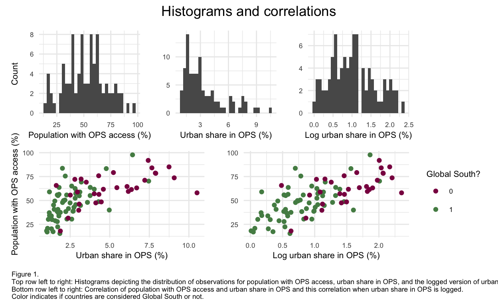
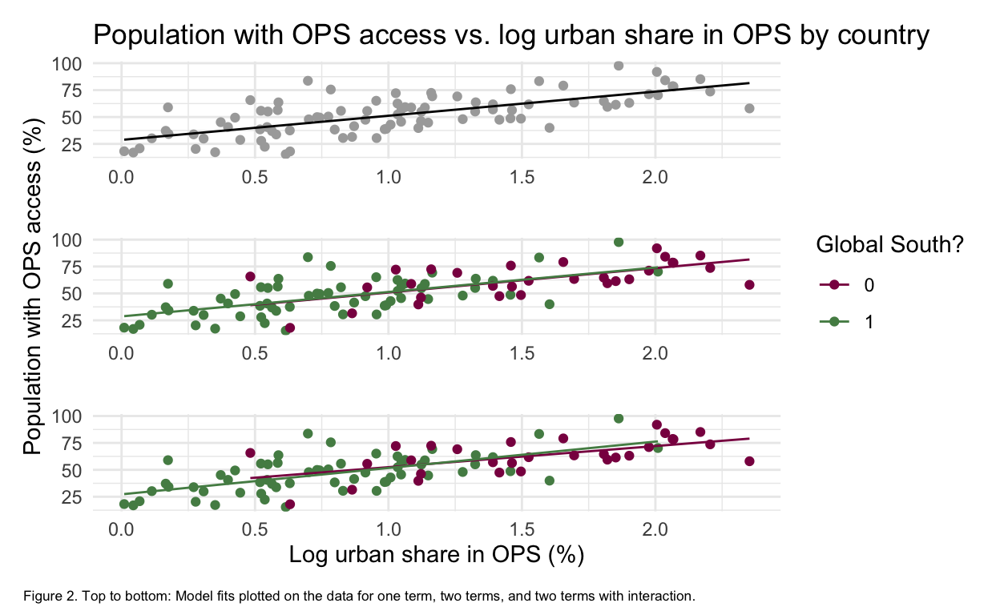

Here I utilize linear models and hypothesis tests to analyze the relationship between population with OPS access and urban share in OPS, by itself and in relation to whether or not a country is considered in the Global South or not.
Open public spaces (OPS) have many benefits to human and environmental well being. However, availability of OPS does not always increase access to OPS within urban areas, and not everyone has the same access to OPS within urban areas globally (Chen et al., 2022; Kabisch et al., 2016). While researchers are aware of accessibility issues, we could benefit from a more unified quantitative analysis of how much of the population benefits from an increase in open public spaces to inform policy or planning, for example, looking here at the large scale designation of the Global South vs. the Global North as a starting point.
Past studies have looked into inequities related to OPS, even in areas of the Global South vs. the Global North, but I will be conducting this analysis with a consistent data frame (a major other related study, Rigolon et al. (2018), synthesized data from many other studies, which did not all have consistent definitions for variables of interest). A lot of studies also focus on access differences spatially in general or access in relation to socioeconomic indicators, so I will be focusing here purely on if availability leads to access. Lastly, a study that touched on this topic, Chen et al. (2022), focused on smaller scale spatial units in relation to Global South vs. Global North, but here I will be looking at data averaged over the designations as a whole. Considering that Chen et al. (2022) found that “the greenspace coverage in New York City, United States is 58.01%, but the estimated human exposure to greenspace is only 25.73%” while “the greenspace coverage in Billings, United States is 46.79%, but the greenspace exposure is 48.89%,” I would like to see if what patterns hold up on a larger scale.
This leads me to my two primary sets of questions:
Does availability of OPS result in a disproportionate increase in the share of population with OPS access within urban areas? Or, considering the case of New York City mentioned above, will this availability not result in equivalent or greater access?
Does this result differ across space: is the effect different in the Global South vs. Global North? How so? What is the disparity like at this scale?
The data used here is from the UN Habitat Urban Indicators Database: 11 7 1 provision and access to open spaces in cities 2020. This dataset’s variables were estimated solely in 2020 and does not vary temporally.
My two key variables of focus from this dataset are:
Urban Share in OPS (%)
Population with OPS access (%)
This dataset defines an open public space as: “any open piece of land that is undeveloped or land with no buildings (or other built structures) that is accessible to the public, and that provides recreational areas for residents and helps to enhance the beauty and environmental quality of neighbourhoods” (“Public space definition”, n.d.). This dataset also includes information on street space availability, but I will be focusing here solely on OPS availability. With regard to access, in this dataset an OPS is considered accessible to the population if it is within 400 meters of walking distance for that portion of the population (“Metadata on SDG”, n.d.). The smallest scale that the data for these variables is available at is the city level, but I average by country. To answer the second set of questions, I incorporate a second dataset to categorize countries into Global South vs. Global North.
Some limitations of this dataset include:
3 countries had no data for at least one variable of interest and had to be dropped from the analysis (94 countries → 91).
Since access is based on walking distance, this carries the assumption that there are no other key barriers to access, which is not always true. One thing that is hard to account for is the population’s comfort with using the OPS: if they feel unsafe there, they may not use the space despite being near it.
Each OPS has varying levels of environmental sustainability, so there are mixed environmental benefits represented within these OPS designations. Considering the definition includes environmental quality enhancement, we can assume the effects of these OPS are net positive, but we do not know exactly how much each is benefiting the areas they occupy environmentally. I only mention this point to note that some areas may be gaining more environmental benefits from these spaces than others, which this dataset does not include information on. I can only comment on the human accessibility of these spaces.
My general steps in conducting this analysis are as follows:
General data wrangling
Preliminary analysis
Generate statistical results
Create linear models
Run hypothesis tests
Unfold the code below to view annotated steps of how I manipulated the two datasets and combined them for use in my later analyses.
# cleaning and wrangling of the two datasets
access <- read_csv(here("data", "ops_access.csv")) %>% # read in the first dataset
clean_names() %>% # make names easier to work with
drop_na(country, urban_share_in_ops, population_with_ops_access) %>% # drop NAs from key variables: we need all three of these pieces of information for each observation for it to be used
select(country, urban_share_in_ops, population_with_ops_access) %>% # select only the relevant variables
group_by(country) %>% # group data by country
summarize(mean_urb_share = mean(urban_share_in_ops), # take the mean by country for each variable of interest
mean_pop_w_access = mean(population_with_ops_access)) %>%
mutate(log_mean_urb_share = log(mean_urb_share)) # include a logged RHS variable column (relevant later)
global_south <- read_csv(here("data", "global_south_countries.csv")) %>% # read in the second dataset, after manually fixing a few country names that did not match between the two datasets
clean_names() %>% # make names easier to work with
filter(global_south == TRUE) # keep only country names that are considered Global South
country_list <- unlist(global_south$country) # put these country names into a list
access_south <- access %>%
filter(country %in% country_list) %>% # filter the access data by these countries
mutate(global_south = 1) # if we see the country name, assign it a 1 = Global South
access_north <- access %>%
filter(!(country %in% country_list)) %>% # filter the access data by not these countries
mutate(global_south = 0) # if we don't see the country name, assign it a 0 = Global North
access_sorted <- rbind(access_south, access_north) %>% # combine these two datasets
mutate(global_south = as.factor(global_south)) # and make sure this binary variable is viewed as a factor for later use
Before running my statistical models and tests, I first explored the data and created histograms for the two main variables of interest. This is where I saw that urban share in OPS was skewed right, while Population with OPS access appeared mostly normally distributed, and when plotted against each other, the relationship between the two variables appears non-linear. Upon logging urban share in OPS, we then get a mostly normally distributed histogram and a more linear plot between the two variables, so we use the logged urban share in OPS moving forward. Here, we also begin to see how countries in the Global North tend to have both higher urban share in OPS and population with OPS access.
pop_hist <- ggplot(data = access_sorted) +
geom_histogram(aes(mean_pop_w_access)) +
labs(x = "Population with OPS access (%)",
y = "Count") +
theme_minimal() +
theme(text = element_text(size = 8))
ops_hist_unalt <- ggplot(data = access_sorted) +
geom_histogram(aes(mean_urb_share)) +
labs(x = "Urban share in OPS (%)",
y = "") +
theme_minimal() +
theme(text = element_text(size = 8))
ops_hist <- ggplot(data = access_sorted) +
geom_histogram(aes(log_mean_urb_share)) +
labs(x = "Log urban share in OPS (%)",
y = "") +
theme_minimal() +
theme(text = element_text(size = 8))
corre_unlog <- ggplot(access_sorted, aes(x = mean_urb_share, y = mean_pop_w_access, color = global_south)) +
geom_point() +
labs(x = "Urban share in OPS (%)",
y = "Population with OPS access (%)") +
scale_color_manual(values = c("deeppink4", "palegreen4")) +
theme_minimal() +
theme(legend.position = "none",
text = element_text(size = 8))
corre_log <- ggplot(access_sorted, aes(x = log_mean_urb_share, y = mean_pop_w_access, color = global_south)) +
geom_point() +
labs(x = "Log urban share in OPS (%)",
y = "",
color = "Global South?") +
scale_color_manual(values = c("deeppink4", "palegreen4")) +
theme_minimal() +
theme(text = element_text(size = 8))
(pop_hist + ops_hist_unalt + ops_hist) / (corre_unlog + corre_log) +
plot_annotation(
title = "Histograms and correlations",
caption = "Figure 1. \nTop row left to right: Histograms depicting the distribution of observations for population with OPS access, urban share in OPS, and the logged version of urban share in OPS. \nBottom row left to right: Correlation of population with OPS access and urban share in OPS and this correlation when urban share in OPS is logged. \nColor indicates if countries are considered Global South or not.") &
theme(plot.caption = element_text(size = 6.5, hjust = 0),
plot.title = element_text(hjust = .5))

Here I will analyze the results of my main statistical methods: linear models and hypothesis tests.
I start by looking at a simple linear model between Population with OPS access and log Urban Share in OPS:
\[ \text{pop_w_access}_i = \beta_0 + \beta_1 \text{urb_share}_i + \varepsilon_i \]
Then I build on this, adding Global South or not as another right hand side (RHS) term:
\[ \text{pop_w_access}_i = \beta_0 + \beta_1 \text{urb_share}_i + \beta_2 \text{global_south}_i + \varepsilon_i \]
In the last model, I add in an interaction term between log Urban Share in OPS and Global South or not. This model represents the case in which Global South or not changes the effect that log Urban Share in OPS has on Population with OPS access.
\[ \text{pop_w_access}_i = \beta_{0} + \beta_{1} \text{urb_share}_i + \beta_{2} \text{global_south}_i + \beta_{3} \text{urb_share}_i \cdot \text{global_south}_i + \varepsilon_i\]
mod = lm(mean_pop_w_access ~ log_mean_urb_share, data = access_sorted)
mod2 = lm(mean_pop_w_access ~ log_mean_urb_share + global_south, data = access_sorted)
mod3 = lm(mean_pop_w_access ~ log_mean_urb_share * global_south, data = access_sorted)
tab_mod_combined <- tab_model(mod, mod2, mod3,
string.ci = "95% CI",
string.p = "p-value",
pred.labels = c("Intercept", "Log urban share in OPS (%)", "Global South (1)", "Log urban share in OPS (%):Global South (1)"),
dv.labels = c("One term", "Two terms", "Two terms with interaction"),
title = "Table 1. Linear model summaries for one term, two terms, and two terms with interaction")
aug_mod = augment(mod)
aug_mod2 = augment(mod2)
aug_mod3 = augment(mod3)
plot_mod <- ggplot(access_sorted, aes(x = log_mean_urb_share, y = mean_pop_w_access)) +
geom_point(color = "darkgrey") +
geom_line(data = aug_mod, aes(y = .fitted)) +
labs(title = "Population with OPS access vs. log urban share in OPS by country",
x = "",
y = "") +
theme_minimal()
plot_mod2 <- ggplot(access_sorted, aes(x = log_mean_urb_share, y = mean_pop_w_access, color = global_south)) +
geom_point() +
geom_line(data = aug_mod2, aes(y = .fitted, color = global_south)) +
labs(x = "",
y = "Population with OPS access (%)",
color = "Global South?") +
scale_color_manual(values = c("deeppink4", "palegreen4")) +
theme_minimal()
plot_mod3 <- ggplot(access_sorted, aes(x = log_mean_urb_share, y = mean_pop_w_access, color = global_south)) +
geom_point() +
geom_line(data = aug_mod3, aes(y = .fitted, color = global_south)) +
labs(x = "Log urban share in OPS (%)",
y = "") +
scale_color_manual(values = c("deeppink4", "palegreen4")) +
theme_minimal() +
theme(legend.position = "none")
tab_mod_combined
| One term | Two terms | Two terms with interaction | |||||||
|---|---|---|---|---|---|---|---|---|---|
| Predictors | Estimates | 95% CI | p-value | Estimates | 95% CI | p-value | Estimates | 95% CI | p-value |
| Intercept | 28.73 | 23.06 – 34.41 | <0.001 | 28.14 | 17.56 – 38.72 | <0.001 | 32.88 | 16.61 – 49.15 | <0.001 |
| Log urban share in OPS (%) | 22.44 | 17.63 – 27.25 | <0.001 | 22.69 | 16.57 – 28.82 | <0.001 | 19.60 | 9.49 – 29.72 | <0.001 |
| Global South (1) | 0.50 | -7.04 – 8.04 | 0.895 | -5.64 | -23.32 – 12.04 | 0.528 | |||
| Log urban share in OPS (%):Global South (1) | 4.89 | -7.83 – 17.62 | 0.447 | ||||||
| Observations | 91 | 91 | 91 | ||||||
| R2 / R2 adjusted | 0.491 / 0.486 | 0.491 / 0.480 | 0.495 / 0.477 | ||||||
plot_mod / plot_mod2 / plot_mod3 +
plot_annotation(caption = "Figure 2. Top to bottom: Model fits plotted on the data for one term, two terms, and two terms with interaction.") &
theme(plot.caption = element_text(size = 6.5, hjust = 0))

One term:
\(\beta_0\) = We expect the population with OPS access to be 28.73% when log urban share in OPS is 0% (this would not be possible, as if there are no OPS there could be no access).
\(\beta_1\) = A 1% change in the percent of urban share in OPS leads to a 22.44% change in population with OPS access.
Two terms:
\(\beta_0\) = We expect the population with OPS access to be 28.14% when log urban share in OPS is 0%, for the Global North (this would not be possible, as if there are no OPS there could be no access).
\(\beta_1\) = A 1% change in the percent of urban share in OPS leads to a 22.69% change in population with OPS access for the Global North.
\(\beta_2\) = On average, \(\beta_1\) is 0.5% higher for the Global South relative to the Global North.
Two terms with interaction:
\(\beta_0\) = We expect the population with OPS access to be 32.88% when log urban share in OPS is 0%, for the Global North (this would not be possible, as if there are no OPS there could be no access).
\(\beta_1\) = A 1% change in the percent of urban share in OPS leads to a 19.60% change in population with OPS access for the Global North.
\(\beta_2\) = On average, \(\beta_1\) is 5.64% lower for the Global South relative to the Global North, when log urban share in OPS is 0%.
\(\beta_3\) = The effect of urban share in OPS on population with OPS access is 4.89% higher in the Global South relative to the Global North.
The only ones that are significant are the \(\beta_0\) terms and the \(\beta_1\) terms at the \(\alpha=0.05\) significance level. The \(\beta_2\) term does not have a significant p-value but it does go down when the interaction term is added in. The adjusted R-squared value goes down slightly with each progressive model, indicating worse fit.
The first hypothesis test we perform is a linear hypothesis test on the slope for the first model. This allows us to further explore whether or not urban share in OPS disproportionately affects population with OPS access. If the slope is equal to 1 (in an unlogged situation), then the two variables would increase by the same amount. If it does not, then they would be increasing at different rates. Since we have logged the RHS variable, this changes the value we are using from 1 to 100. Since we would divide by 100 to get the slope back to roughly a regularly interpretable value, I have chosen to multiply the 1 by 100 in an effort to get it to the same interpretation as what we are using (see here for more information on the math behind this). Therefore, these are our null and alternative hypotheses:
\[H_{0}: \beta_1 = 100\] \[H_{1}: \beta_1 ≠ 100\]
Our second and third hypothesis tests we perform are t-tests on the difference in means between Global South and Global North for (log) urban share in OPS and population with OPS access. This allows us to look closer at the disparity between the two designations.
\[H_{0}: \mu_{Global North} - \mu_{Global South} = 0\] \[H_{1}: \mu_{Global North} - \mu_{Global South} ≠ 0\]
lin <- linearHypothesis(mod, "log_mean_urb_share", rhs = 100)
t1 <- t.test(log_mean_urb_share ~ global_south, data = access_sorted)
t2 <- t.test(mean_pop_w_access ~ global_south, data = access_sorted)
lintest_df <- c("", "", "", "", "p-value" = lin$`Pr(>F)`) %>%
t() %>%
as.data.frame() %>%
select(-"p-value1")
names(lintest_df) <- c("Global North mean", "Global South mean", "CI (lower)", "CI (upper)", "p-value")
test_name <- c("linear (model 1 slope)", "t-test (log urban share in OPS)", "t-test (population with OPS access)")
ttests <- list()
ttests[[1]] <- t1
ttests[[2]] <- t2
combined_test_df <- sapply(ttests, function(x) {
c(round(x$estimate[1], 2),
round(x$estimate[2], 2),
"CI (lower)" = round(x$conf.int[1], 2),
"CI (upper)" = round(x$conf.int[2], 2),
"p-value" = round(x$p.value, 2))
}) %>%
t() %>%
as.data.frame() %>%
rename("Global North mean" = "mean in group 0",
"Global South mean" = "mean in group 1") %>%
rbind(lintest_df, .) %>%
cbind(test_name, .) %>%
rename("Test name" = test_name) %>%
mutate("p-value" = case_when(
"p-value" < 0.001 ~ "p-value",
TRUE ~ "<0.001"))
test_tab <- combined_test_df %>%
kbl(caption = "Table 2. Hypothesis test results") %>%
kable_classic_2(full_width = F)
test_tab
| Test name | Global North mean | Global South mean | CI (lower) | CI (upper) | p-value |
|---|---|---|---|---|---|
| linear (model 1 slope) | <0.001 | ||||
| t-test (log urban share in OPS) | 1.53 | 0.78 | 0.54 | 0.97 | <0.001 |
| t-test (population with OPS access) | 62.95 | 46.32 | 9.24 | 24.01 | <0.001 |
Here we see that all tests performed are significant at \(\alpha=0.05\). We are 95% confident that [0.54, 0.97] contains the difference in log urban share in OPS between Global North and Global South, and we are 95% confident that [9.24, 24.01] contains the difference in population with access to OPS between Global North and Global South.
In regards to our first set of questions, we learn that there is evidence that the variables have a significant relationship and a disproportionate relationship between population with access to OPS and urban share in OPS, where population with access to OPS increases a lot for a small increase in urban share in OPS. Therefore, at a large scale, we do not see evidence for trends like what was found for New York City. In regards to the second set of questions, there is no evidence that factoring in Global South vs. not impacts the relationship between population with access to OPS and urban share in OPS significantly in the two additional models; however, we can clearly see there is evidence for a great disparity between the Global North and Global South for both variables as of 2020.
There are several ways this analysis could be expanded:
We could look into more hypothesis tests to gain more information on the relationship between the two variables and Global North vs. Global South.
We could build on previous studies and further explore smaller scales for disparities within countries or between countries (or other smaller scale levels) to more specifically target where change is needed.
We could gauge another baseline for how much a 1% increase in urban share in OPS should increase population with OPS access and analyze this (ie. should a 1% increase in urban share in OPS lead to a 10% increase in population with OPS access normally? How should we tell if we are fully optimizing OPS placement for accessibility purposes?).
We could compare to different years to see if accessibility is getting better and by how much. However, no other years appear to be available from this database at the moment.
11 7 1 provision and access to open spaces in cities 2020. UN Habitat. (n.d.). Retrieved December 8, 2022, from https://data.unhabitat.org/datasets/GUO-UN-Habitat::11-7-1-provision-and-access-to-open-spaces-in-cities-2020/about Chen, B., Wu, S., Song, Y., Webster, C., Xu, B., & Gong, P. (2022, August 8). Contrasting inequality in human exposure to greenspace between cities of Global North and Global South. Nature News. Retrieved December 8, 2022, from https://www.nature.com/articles/s41467-022-32258-4
Ford, C. (2018, August 17). Interpreting Log Transformations in a Linear Model. University of Virginia Library: Research Data Services + Sciences. Retrieved December 8, 2022, from https://data.library.virginia.edu/interpreting-log-transformations-in-a-linear-model/
Global South Countries 2022. World Population Review. (n.d.). Retrieved December 8, 2022, from https://worldpopulationreview.com/country-rankings/global-south-countries
Kabisch, N., Strohbach, M., Haase, D., & Kronenberg, J. (2016). Urban Green Space Availability in European cities. Ecological Indicators, 70, 586–596. https://doi.org/10.1016/j.ecolind.2016.02.029
Metadata on SDG indicator 11 7 1. UN Habitat. (n.d.). Retrieved December 8, 2022, from https://data.unhabitat.org/documents/GUO-UN-Habitat::metadata-on-sdg-indicator-11-7-1/explore
Public space definition for SDG 11 7 1. UN Habitat. (n.d.). Retrieved December 8, 2022, from https://data.unhabitat.org/documents/GUO-UN-Habitat::public-space-definition-for-sdg-11-7-1/explore
Rigolon, A., Browning, M., Lee, K., & Shin, S. (2018). Access to urban green space in cities of the Global South: A systematic literature review. Urban Science, 2(3), 67. https://doi.org/10.3390/urbansci2030067